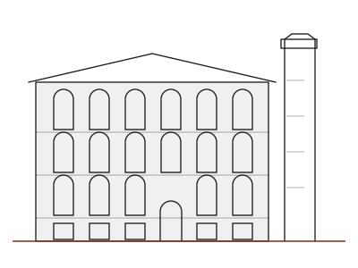
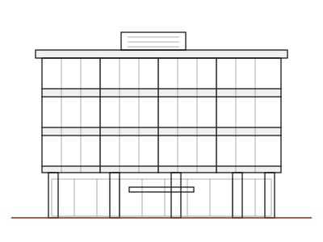
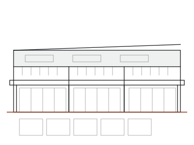
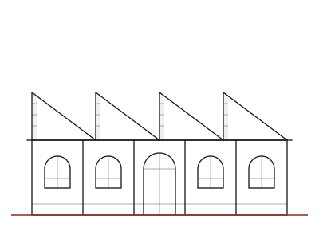

Independent practice · Leeds · since 2004
We work out what went wrong, and write it so it holds up.
Kestrel Survey is a four-person practice of chartered building surveyors. Defect diagnosis, dilapidations and pre-purchase surveys on commercial property, for landlords, managing agents and asset managers across Yorkshire and the North East.
Tell us the building type and your deadline. That is usually enough for us to say whether we are the right firm, and we will call you back.
- Established
- 2004Twenty-two years in practice
- Surveyors
- FourAll chartered, RICS regulated
- Instructions a year
- c. 180Small enough that a partner sees every report
- Where we work
- Yorkshireand the North East, from Leeds
What we do
Three services. Most clients come to us for the third one first, usually because something has failed and the parties cannot agree whose problem it is.
Defect diagnosis
Water is getting in, the frame is moving, the roof has failed years early — and nobody agrees why. We establish the cause from the evidence, give an opinion on responsibility, and set out what putting it right involves and roughly what it costs.
What this involves →Dilapidations
Interim and terminal schedules, quantified demands and responses, for landlords and for tenants. Prepared under the Dilapidations Protocol, with the section 18(1) cap kept in view from the first site visit rather than argued about at the end.
What this involves →Pre-purchase building surveys
Pre-acquisition surveys on commercial property, scoped in writing before we start, with a costed schedule of repairs across one, five and ten years. Reliance for funders and purchasers where it is agreed in advance.
What this involves →“We are not the cheapest and we are not trying to be. Every report we write can end up in front of a court, so it has to be defensible. We would rather turn down work than write something we cannot stand behind.” Kestrel Survey, on how we work
That is not a slogan, it is the reason our reports read the way they do.
Every conclusion in a Kestrel report is tied to something we saw, opened up, measured or tested, and it is written on the assumption that a solicitor will read it line by line. Where the evidence does not support a conclusion, we say that too. It makes for a duller document and a much harder one to take apart.
It also means we turn work down: instructions where the scope is too narrow to reach a safe view, or where we are being asked for a conclusion first and the survey afterwards.
Buildings
The stock we spend most of our time in
Yorkshire and the North East have a particular building stock, and it fails in particular ways. Most of our instructions sit in one of these four.

Mill conversions
Solid stone walls, later interventions, and damp that gets blamed on the wrong thing.

1960s concrete frames
Carbonation, corroding reinforcement, and curtain walling at the end of its life.

Retail parks
Big-span roofs, tenant alterations, and dilapidations across several units at once.

Listed industrial
Sawtooth roofs and cast iron, where consent shapes the repair as much as the defect.
Working with us
Three steps, no forms
- You call, or send four lines by email. Building type, location, what has happened, and the date you need something by. Two minutes on the phone is usually enough for both of us to know whether this is our sort of job.
- We confirm scope and a fixed fee in writing. We do not quote before we understand the building, and we will tell you if a specialist — structural engineer, M&E, asbestos — needs to be part of it.
- We inspect, then report. Draft dates are agreed at the start and kept. You get the draft first, and we will talk it through before it is issued.
We do not carry out residential homebuyer surveys. If you have arrived here looking for one, say so when you call and we will point you at someone who does.
Tell us the building and the deadline.
We will call you back the same working day, and tell you honestly if it is not a job for us.